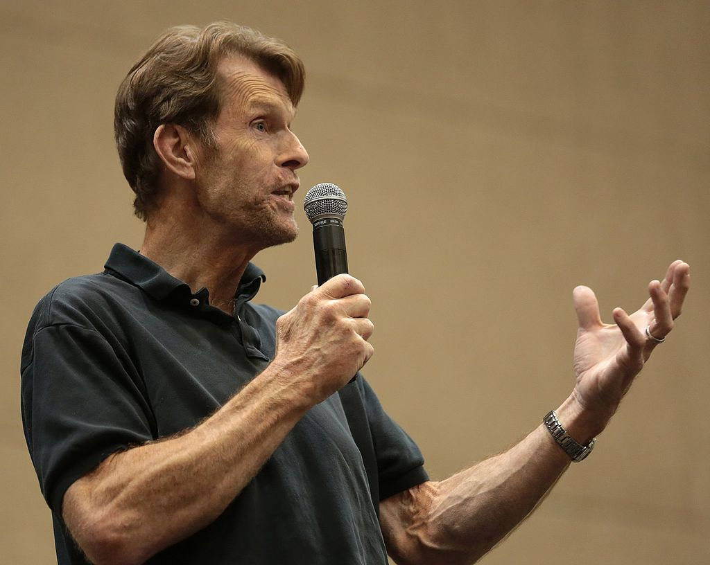

Kevin Conroy
Kevin Conroy (ur. 30 listopada 1955 w Westbury, zm. 10 listopada 2022 w Burbank) – amerykański aktor teatralny, telewizyjny i filmowy, najbardziej znany z dubbingu jako Batman w serialach animowanych oraz serii gier komputerowych Batman: Arkham.
W 1978 odbył tournée z grupą aktorską Johna Housemana The Acting Company, z którą zadebiutował na Broadwayu w sztuce Iry Levin Śmiertelna pułapka (Deathtrap, 1979). Wystąpił także w spektaklach: Rachunki (Accounts ) w Hudson Guild, Wróć, mała Shebo (Come Back, Little Sheba) w Roundabout Theatre, Wschodnie Wybrzeże (Eastern Standard, 1989) w broadwayowskim Golden Theatre, Grecy (The Greeks) w Hartford Stage, Ostatni jankesi (The Last Yankee, od 30 grudnia 1997 do 8 lutego 1998) w Signature Theatre, Lolita Vladimira Nabokova na Broadwayu i Matka Courage (Mother Courage) wg Bertolta Brechta.
Przed kamerą stanął po raz pierwszy w telewizyjnej komedii ABC Jak zdobyć dziewczyny! (How to Pick Up Girls!, 1978) jako barman. Następnie trafił do obsady opery mydlanej NBC Inny świat (Another World, 1980-1981) w roli Jerry’ego Grove. W latach 1980-1985 grał w przedstawieniach szekspiowskich takich jak Sen nocy letniej jako Lizander w Old Globe Theater w San Diego (1982) i na New York Shakespeare Festival 1984, Hamlet w tytułowej roli na New York Shapespeare Festival 1984 i w Old Globe Theatre w San Diego, Król Lear i Wiele hałasu o nic na San Diego Shakespeare Festival.
Telewidzowie mogli go potem zobaczyć w miniserialu NBC Kennedy (1983) w roli Teda Kennedy’ego, miniserialu wojennym CBS Jerzy Waszyngton (1984), operze mydlanej CBS Search for Tomorrow (1984-1985) jako Chase Kendall, sitcomie NBC Zdrówko (Cheers, 1989-1990) oraz sitcomie CBS Murphy Brown (1991). Od 18 grudnia 1985 do 26 marca 1986 występował w roli geja Bartona „Barta” Fallmonta, syna senatora Bucka Fallmonta (Richard Anderson) i kochanka Stevena Carringtona (Jack Coleman) w operze mydlanej ABC Dynastia (Dynasty).
Zasłynął dubbingiem głosem Bruce’a Wayne’a/Batmana, znanego z komiksów DC superbohatera w serialach animowanych Warner Bros., m.in. Superman (Superman: The Animated Series) (1997-1999), w 1999 roku zdobył nominację do nagrody Annie za użyczenie głosu tytułowemu bohaterowi w serialu animowanym Warner Bros. Batman – 20 lat później (Batman Beyond, 1999-2001).